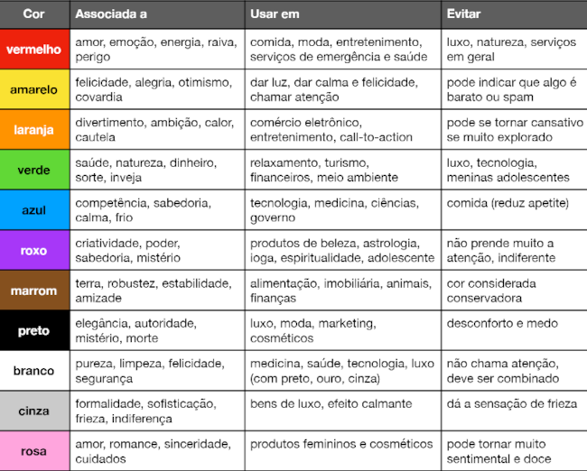
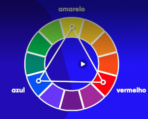
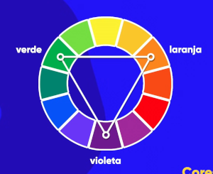
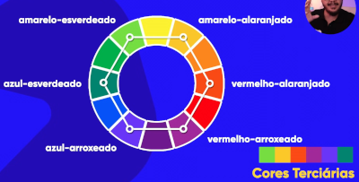
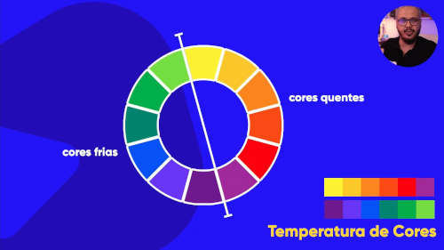
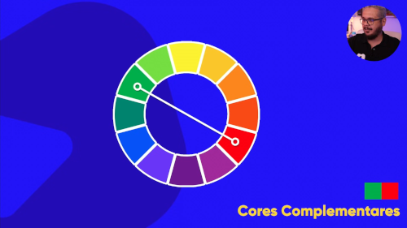
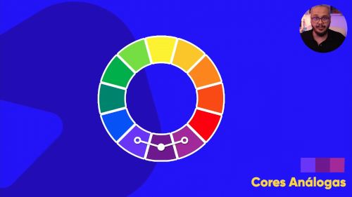
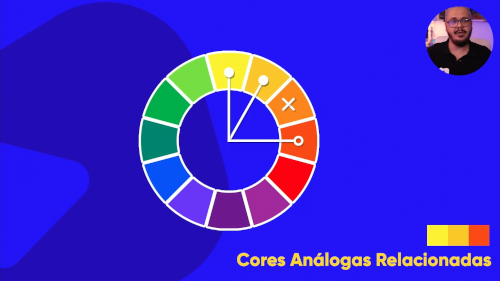
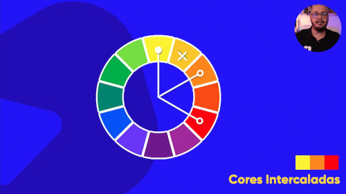
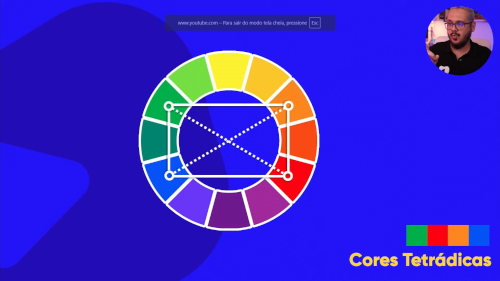

As cores simbolizam diversas coisas, como emoções / sentimentos, e o uso indevido pode causar ao seu site grande número de insatisfação / rejeição
Segue tabelo abaixo com cada significado, assim poderá ter um macete para quais tipos de cores você deseja utilizar em seu site:

Utilizar, a maioria das vezes, aquela tabela já mostrada àcima. Além disso, a sua paleta vai ter, geralmente, de 3 a 5 cores desconsiderando o preto e o branco(Por que, obviamente já estarão dentro do seu site)
Uma boa forma de decidir as cores do seu site é se basear nas cores da LOGO do seu cliente e utilizar cores que fazem harmonia com as mesmas.
As cores primárias são as cores que sempre irão dar origem as todas as outras.

Segue abaixo uma imagem com as cores secundárias.

Segue abaixo uma imagem com as cores terciárias.
Notem que cada cor possuí o nome da cor primária com característica da cor secundária.

Notem que podemos diferenciar as cores também pelas temperaturas.

Cores que possuem grande contraste entre si e que podem ser utilizadas para melhor vizualização de textos.
São as cores obrigatóriamente OPOSTAS do círculo cromático.
Segue abaixo uma imagem das mesmas:

As cores análogas são as cores que possuem uma grande semenlhança, porém em um tom diferente e perceptívelmente notório. Além disso, no círculo cromático elas estão obrigatóriamente uma do lado da outra.
Segue abaixo uma imagem representativa no círculo cromático;

As cores análogas Relacionadas está fortemente relacionado as cores degradê.
Segue exemplo abaixo no círculo cromático:

As cores intercaladas são as cores que pulam dentro das sequências dentro do círuclo cromático. As cores com esse tipo de estrutura ficam um pouco mais dura, porém não deixa de ser uma opção de paleta para site que irá criar.
Segue abaixo uma imagem do círculo cromático relacionando essas cores:

Suponha que você pegue uma cor, tipo o amarelo-alaranjado, com isso você vai pegar obrigatoriamente a cor complementar à ela (que seria o azul-arroxeado) e depois você escolhe uma outra cor aleatória, como o azul-esverdeado, poe exemplo, e pega obrigatoriamente a cor complementar à ela (que seria o vermelho-alaranjado). Assim juntando os pontos que ligam entre si vc terá um polígono de 4 lados que não precisa necessáriamente ser simétrico entre si.
E SIM AS CORES EM QUADRADO TAMBÉM SÃO TETRÁDICAS.
Segue abaixo uma imagem de um exemplo de cores Tetrádicas:

As cores tríadicas são cores que no círculo cromáticosão usadas em distância de três, formando um triângulo equilátero, por isso esse nome.
Obs: As cores primárias também são cores tríadicas.
As cores em quadrado é quase igual a triádica, porém ao invés de pular três cores e formar um triângulo, vai pular duas cores e formar um quadrado entre si.
A monocromia, é você pegar uma única cor e modificar ela para diferentes tons da maneira que desejar.